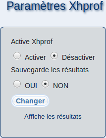

Ici, vous pouvez faire du profilage de performances de votre serveur m23 avec Xhprof afin d'analyser son comportement durant l'exécution (usage de processeur et de mémoire).

En sélectionnant ''Activer'' près de ''Active Xhprof'', vous pouvez activer l'usage de Xhprof. Pour la désactivation, sélectionnez l'option ''Désactiver''. Pendant que le profilage soit actif, le temps de génération de la page couramment affichée sera affiché en premier plan..
Vous pouvez sauvegarder les résultats pour pouvoir effectuer une analyse ultérieure de comportement durant l'exécution en cliquant sur ''OUI'' près de ''Sauvegarde les résultats''. Pendant que cette option soit active, un fichier de profilage sera généré pour chaque page que vous accédez. Vous pouvez trouver ces fichier de profilage dans ''
/var/cache/xhprof/runs
''. Afin de désactiver le profilage, sélectionnez ''NON''.
Enregistrez vos paramètres en cliquant sur ''Changer''.
Les résultats du profilage seront affichés quand vous cliquez sur ''Affiche les résultats'', et ils seront effacés quand vous cliquez sur le X rouge à gauche du résultat de profilage correspondant dans la liste.
root
2018-05-08